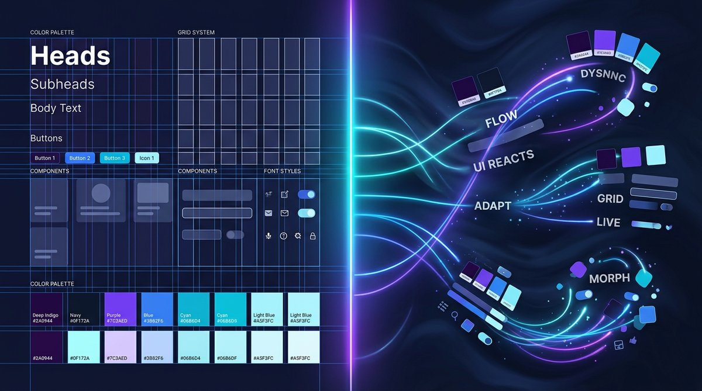

The One Skill AI Can't Automate: Why Emotional Intelligence Is Your Professional Moat
For twenty years we called them soft skills. Now that AI can out-reason most people on most tasks, emotional intelligence is suddenly the hard moat.
Read More →
When the Interface Thinks for Itself: How Claude Is Challenging the Design System Model
Design systems were built on a contract of consistency. Conversational AI is rewriting the terms — and the design system needs to evolve with it.
Read More →You're Not Being Replaced. You're Being Reassigned.
The roles of product designers in AI-first businesses are shifting fast — not disappearing. Here's what the new job actually looks like.
Read More →
How to Build an AI Strategy Before It Builds Itself Without You
Most AI strategies are really AI wishlists. PESTEL analysis and the AI Strategy Canvas are how you tell the difference — and build one that holds up.
Read More →
How AI is Reshaping the UX Design Process
AI isn't replacing designers — it's changing what designers spend their time on. Here's what's actually shifting in practice, from discovery through delivery.
Read More →
Building Design Systems Faster with AI: Lessons from the Field
After scaling design systems at several large organisations, here's how AI is genuinely accelerating documentation, pattern creation, and governance — without cutting corners.
Read More →